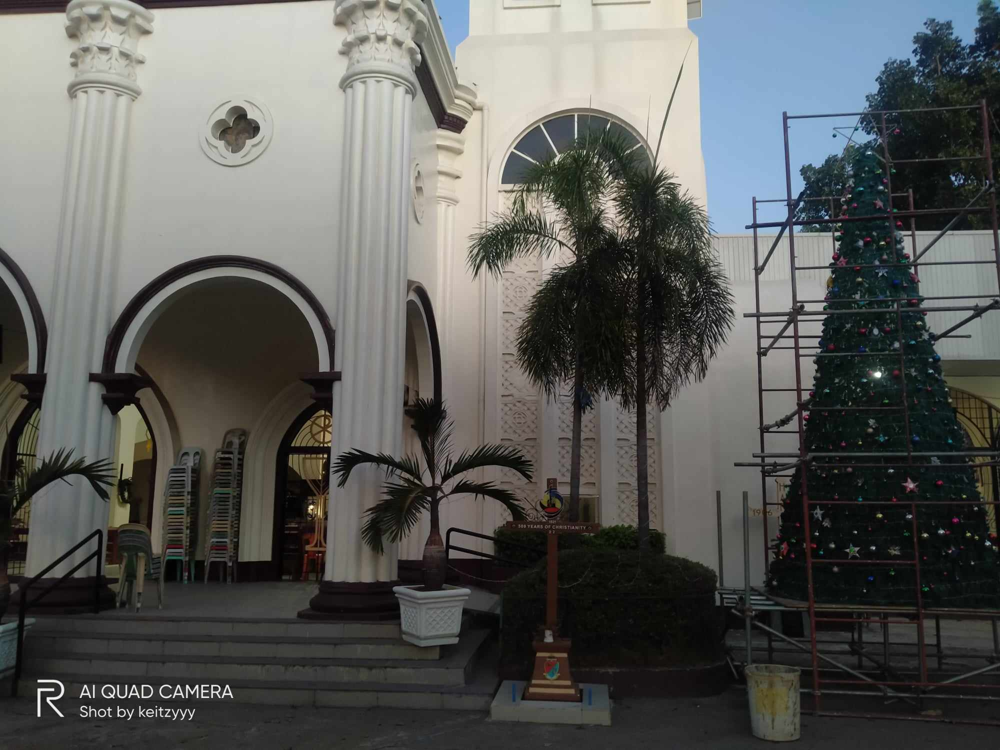

Ang San Roque Parish Church sa Cordova, Cebu, usa ka siglo-daan nga relihiyosong site nga adunay daghang kasaysayan sukad pa sa pag-abot sa mga misyonaryong Espanyol. Ang kolonyal nga arkitektura sa Espanya sa simbahan, nga gidayandayanan sa makuti nga mga detalye ug relihiyosong mga simbolo, nagpakita sa debosyon ug pagkabatid sa komunidad.


Sa sulod, ang mga bisita makasuhid sa relihiyosong arte ug iconograpiya sa simbahan, nga naghulagway sa relihiyosong kadasig ug kultural nga panaghiusa sa komunidad. Ang simbahan dili lamang usa ka dapit sa pagsimba; kini usa ka buhi nga testamento sa kultural nga mga tradisyon ug mga debosyon sa komunidad.
. Ang simbahan usab adunay mga makasaysayanon nga artifact ug mga relikyas, sama sa karaang mga kalis ug relihiyosong mga manuskrito. Atol sa espirituhanon nga mga panghitabo, ang simbahan naghiusa sa komunidad sa usa ka pagbati sa panaghigalaay ug debosyon.